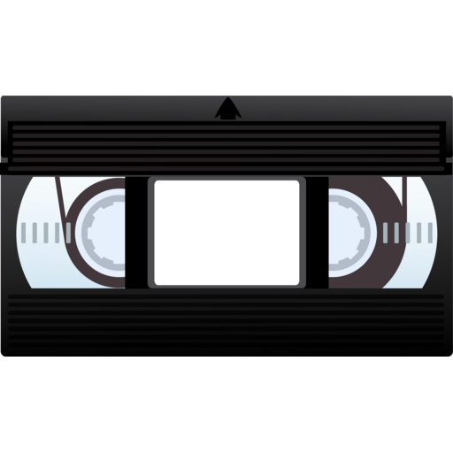

MobileDL by Scott Jackson
Ever made a note to yourself to download something when you get home? Written down the name of a YouTube video to watch later when you've got time?
Ever forgotten to follow up on it?
You won't any more.
MobileDL lets you remotely tell your Mac at home to download files. Just leave MobileDL running in the menubar on your home Macintosh and when you're out and about, use Simplenote on your iPhone, iPod Touch, iPad or any internet-enabled computer to give your computer files to download. Your Mac at home downloads the file, and it's ready for you when you get home.
MobileDL lets you download any kind of file — .mp4, .mov, .mp3, .zip, .dmg, .app, .pdf, you name it — if it's a file on the web, MobileDL can download it. All while you're away from your computer. MobileDL even lets you download YouTube videos — just give MobileDL the URL of the YouTube video and MobileDL will find the video's .mp4 version (in HD where available) and download it.
MobileDL requires Mac OS X 10.5 or higher. If you're on a Windows or Linux box, check out mobile-dl, a more command-line-y version of MobileDL.
Screencast
I made a short screencast about the features of MobileDL, which you can find here.
Download

Contact
scottjacksonx → gmail.